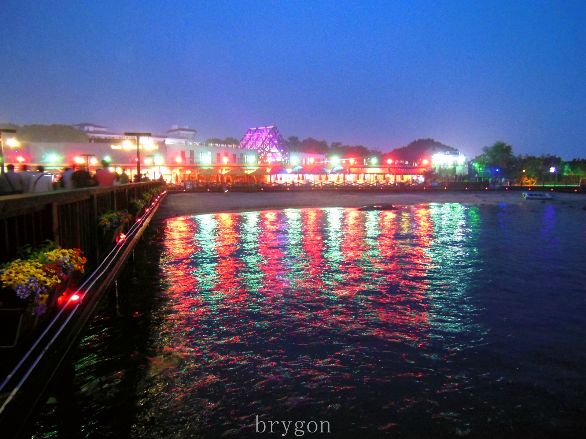
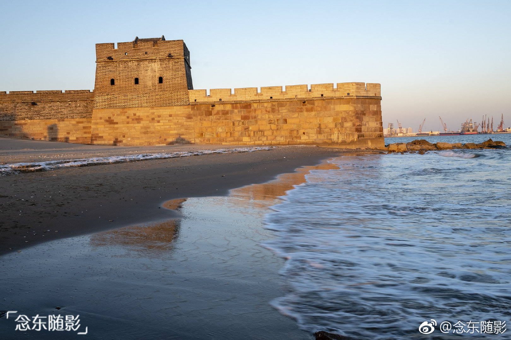
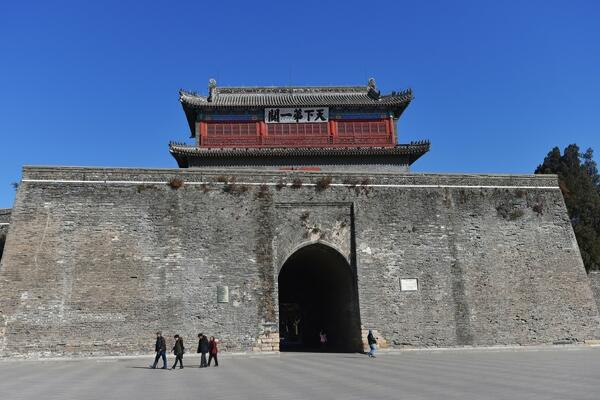
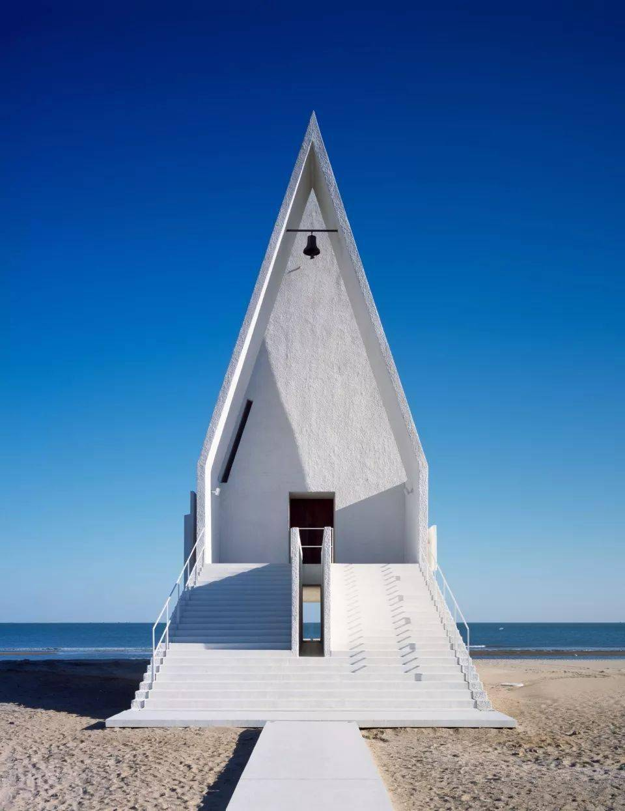
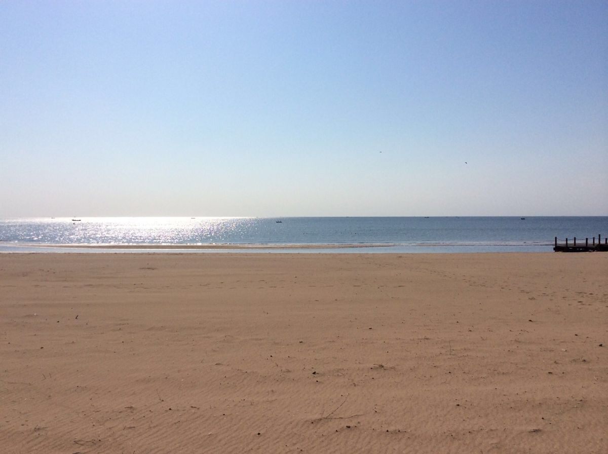
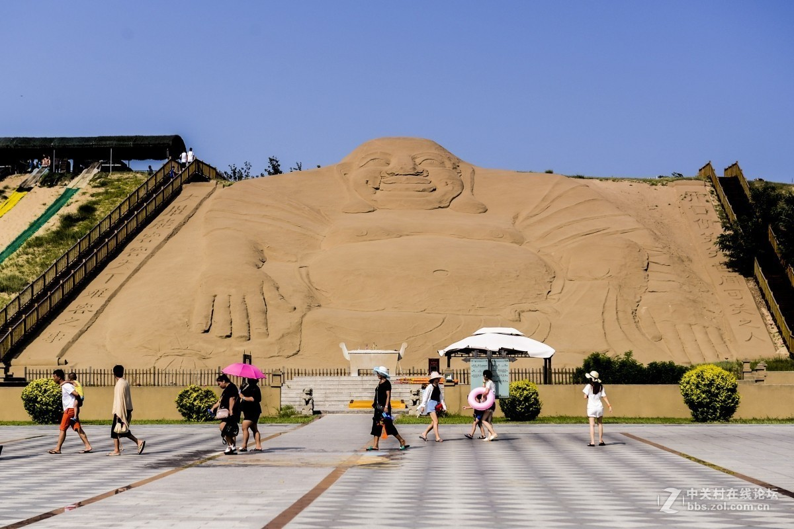

秦皇岛海岸线
秦皇岛是中国北方最经典的海滨度假城市，北戴河、山海关、黄金海岸三大板块各具特色。这里有万里长城入海的壮观、有北戴河看日出的浪漫、有阿那亚的文艺气息，也有最朴实的海鲜大排档。这份三天两夜攻略，带你从历史到海滩、从清晨到日落，感受秦皇岛的多元魅力。
Day 1：北戴河经典
清晨：鸽子窝公园
鸽子窝公园是北戴河看日出的首选地，也是毛泽东写下《浪淘沙·北戴河》的地方。公园建在海边的悬崖上，鹰角亭是最佳观日出点。日出时分，一轮红日从海平面跃出，金光铺满海面，非常震撼。建议日出前30分钟到达占位，夏季日出约4:30-5:00。即使不看日出，白天来也值得——大浅滩退潮时可以赶海捡贝壳。

鸽子窝公园——北戴河最佳日出观赏地
上午：老虎石海上公园
老虎石海上公园是北戴河最热闹的海滨浴场。几块形似猛虎的巨石散落在海滩上，海浪拍打礁石溅起白花，是拍照戏水的好地方。沙滩细软，海水清澈，适合游泳和日光浴。周边就是北戴河的商业中心，餐饮购物都很方便。

老虎石海上公园
晚上：碧螺塔海上酒吧公园
碧螺塔海上酒吧公园是北戴河的夜生活地标。公园建在海面上，集酒吧、演艺、美食于一体。夜晚灯光璀璨，有海上篝火晚会、乐队演出和各种海鲜烧烤。坐在海边喝着啤酒听着浪声和音乐，是北戴河夏夜最惬意的打开方式。

碧螺塔海上酒吧公园夜景
Day 2：山海关 + 阿那亚
上午：老龙头
老龙头是万里长城的东部起点，长城从这里直插入海，城墙与大海交汇的画面气势恢宏。景区内有澄海楼、入海石城、海神庙等，站在城墙上远眺渤海，脚下是海浪拍击长城基座，这种"长城入海"的壮观只有在这里才能看到。建议早上来，游客少、光线好。

老龙头——万里长城东部起点
中午：天下第一关
山海关古称"天下第一关"，是明长城东端的第一座关隘。城楼雄伟壮观，"天下第一关"五个大字苍劲有力。古城内保留了明清街巷格局，可以逛逛古城步行街吃点当地小吃。从老龙头驱车约10分钟即到，两个景点建议安排在同一个上午。

山海关——天下第一关
下午-傍晚：阿那亚
阿那亚是近年来中国最火的文艺海边社区。孤独图书馆面朝大海，安静地矗立在沙滩上；阿那亚礼堂纯白色的建筑在海天之间如同一件艺术品。社区内还有沙丘美术馆、海边市集、各种设计感十足的咖啡馆和餐厅。下午来逛逛拍拍照，傍晚在海边看日落，是秦皇岛最有格调的体验。

阿那亚礼堂——海边的文艺地标
小贴士：阿那亚社区需要提前预约或购买门票才能进入，旺季名额紧张，建议提前在公众号预约。
Day 3：黄金海岸休闲
上午：黄金海岸沙滩
黄金海岸位于昌黎县境内，拥有绵延30公里的天然沙滩，沙质细腻金黄，是秦皇岛最美的海岸线之一。这里远离市区，商业化程度低，人少景美。可以在沙滩上漫步、玩沙滩排球，也可以体验滑沙——从几十米高的沙丘上滑下直冲大海，刺激又有趣。

黄金海岸——绵延金色沙滩
下午：沙雕海洋乐园
沙雕海洋乐园是黄金海岸上的综合游乐景区，最大亮点是大型沙雕艺术群——用沙子雕刻出的各种精美造型，有人物、建筑、动物等主题，规模壮观。园内还有水上乐园、滑沙场、摩天轮等设施，适合全家游玩。逛完沙雕后在海边走走，为三天旅程画上句号。

沙雕海洋乐园
美食推荐
- 海鲜：皮皮虾（当地叫虾爬子）、螃蟹、扇贝、生蚝、海虹，北戴河石塘路市场可以买了找店加工
- 特色小吃：烤大虾、海鲜烧烤、长城饸饹、四条包子、回记绿豆糕
- 推荐觅食地：北戴河石塘路海鲜市场、山海关古城内小吃街、南戴河渔港周边大排档
- 阿那亚：社区内有不少精品餐厅和咖啡馆，价格略高但体验好
住宿建议
- 北戴河（推荐）：景点集中、配套成熟，海景酒店和民宿选择多，刘庄片区性价比高
- 山海关：适合喜欢历史文化氛围的游客，古城内有一些精品民宿
- 黄金海岸/南戴河：环境安静，适合度假放松，有不少度假酒店和海边公寓
- 预算参考：旺季（7-8月）价格翻倍，经济型200-400元/晚，海景房500-1000元/晚
交通指南
- 到达：秦皇岛站（高铁，北京出发约2小时、天津约1.5小时）；北戴河站（高铁，离北戴河景区更近）；山海关机场
- 市内：公交覆盖北戴河和山海关主要景点；打车方便且便宜；黄金海岸和阿那亚建议自驾或打车
- 建议：北戴河内部可公交+步行；Day 2山海关+阿那亚、Day 3黄金海岸建议自驾或包车
实用 Tips
- 鸽子窝看日出务必查好当天日出时间，夏季约4:30-5:00，提前30分钟到
- 7-8月是绝对旺季，住宿翻倍、海滩人多，建议6月或9月来体验更舒适
- 阿那亚需提前预约，旺季名额紧张，建议至少提前3天在公众号抢名额
- 山海关和老龙头可以买联票，比单独购票便宜不少
- 北戴河石塘路市场买海鲜注意防宰——提前看好市场价、自带弹簧秤、找明码标价的店加工
- 海边防晒是重点，SPF50+防晒霜、遮阳帽、墨镜必备
- 黄金海岸风浪比北戴河大，游泳注意安全，看好警示旗